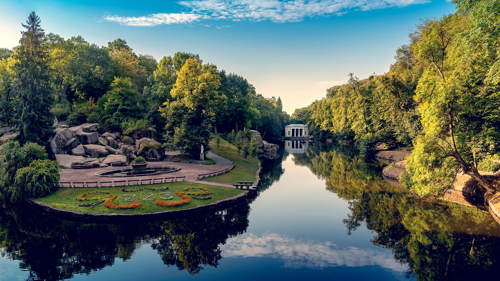

Києво-Печерська Лавра
Розташування: м. Київ

Відіграючи значну роль в об’єднанні східних земель як духовний, соціальний, культурний та
просвітницький центр, Києво-Печерська лавра мала заслужену славу не лише на території Київської
Русі, а й у Польщі, Вірменії, Візантії, Болгарії та інших країнах…
Сьогодні Національний Києво-Печерський історико-культурний заповідник – найбільший музейний
комплекс
України, де зосереджено 144 споруди, 122 з яких – пам’ятки історії і культури. Серед них – 2
унікальних підземних комплекси, храми, пам’ятки архітектури XI–XIX ст., численні виставкові
приміщення.
Також на території заповідника розміщені музеї: Музей книги і друкарства України, Музей
українського
народного декоративного мистецтва, Музей театрального, музичного та кіномистецтва України, Музей
історичних коштовностей України. У музеях і фондах можна побачити рукописи старовинних книг,
ікони,
колекції тканин і вишивок, роботи з дорогоцінних металів, стародавні гравюри та витвори сучасних
митців.
На території заповідника знаходиться і Києво-Печерська лавра – видатна пам’ятка не лише
української,
слов’янської, але й загальносвітової культури. Беручи до уваги винятковість архітектурного
ансамблю,
роль Лаври у розвитку вітчизняної та світової культури, науки й освіти, 14-та сесія міжнародного
комітету ЮНЕСКО у 1990 р. внесла Києво-Печерську лавру до «Списку всесвітньої культурної
спадщини
ЮНЕСКО».
Києво-Печерська лавра – православний монастир, заснований у 1051 р. монахами Антонієм і Феодосієм
поблизу Києва. В ХІ ст. монастир став центром розповсюдження і затвердження християнства у
Київській
Русі. У ХІІ ст. монастир отримав статус «лаври» – головного великого монастиря.
Кам'янець-Подільський
Розташування: Хмельницька область

Кам’янець-Подільський – місто, що зберегло дух середньовіччя. Своєрідність і унікальність його
полягають у гармонійному поєднанні ландшафту з містобудівною структурою середньовічного міста, в
якому військові інженери, використовуючи чудові природні властивості, створили фортифікаційну
систему, що не має аналогів у Європі.
Кам’янець-Подільський хоч не є обласним центром, проте займає третє місце після Києва та Львова
за кількістю пам’яток старовини і культури.
Національний історико-архітектурний заповідник „Кам’янець” є одним із найстаріших на території
України. Загальна площа заповідника сягає 121 га та налічує майже 200 пам’яток архітектури.
До творення неповторного архітектурного обличчя міста у різні періоди історії доклали
майстерності своїх рук архітектори й скульптори з Італії, Нідерландів, Вірменії, Польщі,
Франції, Туреччини та ін.
Сьогодні чимало туристів висловлюють захоплення вдалим поєднанням потужних оборонних мурів
міста, Старого замку (XII–XVIII ст.) та високих стрімких скель каньйону річки Смотрич. Не менш
привабливий для любителів фортифікації і комплекс укріплень Нового замку, збудований у XVII ст.,
що є єдиним збереженим зразком такого типу споруд нідерландської школи.
Неабиякий інтерес викликає і унікальний Замковий міст, що сполучає Старе місто із Замковим
комплексом. Досі існує немало суперечок щодо його походження. Деякі науковці стверджують, що
міст було закладено ще римлянами у II ст. під час походу Траянового війська на Дакію.
Софіївка
Розташування: м. Умань

Численним відвідувачам дендропарк «Софіївка» відомий як туристична перлина України, музей
садово-паркового мистецтва, місце, де можна поринути у казковий романтичний світ природи, краси
і кохання…
Національний дендрологічний парк „Софіївка” – одне з найвидатніших творінь світового
садово-паркового мистецтва кінця ХVІІІ – першої половини ХІХ ст. Парк розкинувся на площі майже
180 га на узбіччі старовинного міста Умань Черкаської області.
Заснував парк у 1796 р. польський магнат Станіслав Потоцький на честь своєї дружини
красуні-гречанки Софії та подарував його у день її янгола, в травні 1802 р. Ідея створення парку
в романтичному стилі з використанням римської і грецької міфологій належала самій Софії.
Дивовижні пейзажі, екзотичні рослини, античні скульптури, водойми, каскади, фонтани, кам’яні
гроти – все це гармонійно поєднується і створює неповторну атмосферу казки. Цей шедевр вражає
відвідувачів своєю красою вже понад 210 років.
Втілювали задум архітектурного проекту народні майстри-умільці Уманщини – з 1796 по 1802 рр.
копали ставки, підземну річку, споруджували водоспади й водограї, прокладали алеї, переносили
велетенські гранітні брили, створювали із граніту та гіпсу художні прикраси для архітектурних
споруд. У парку висаджували дерева місцевих порід та екзотичні рослини, завезені з різних країн
світу. Прикрашали парк мармуровими статуями грецьких богів та богинь, філософів та поетів,
виготовленими скульпторами Італії та Франції.
У парку навіть зберігся дуб, віком біля 400 років, – німий свідок багатьох подій, що відбувалися
у цих місцях. За народними переказами, саме під цим дубом збиралися на наради з козаками
легендарні українські ватажки Максим Залізняк та Іван Гонта.
Головна композиційна вісь парку проходить по річищу Кам’янки, де споруджено ряд штучних басейнів
та ставів: Верхній став (понад 8 га), Нижній став (близько 1,5 га), водоспади (один з них 14 м
висотою), шлюзи, каскади, підземну ріку Ахеронт (завдовжки 224 м), водограї (найбільший до 20 м)
тощо.
Софія Київська
Розташування: м. Київ

Софія Київська пережила та побачила на своєму віку стільки, що про це можна говорити нескінченно.
Софія – це справжня культурна скарбниця: тут і архітектура, і скульптура, і малярство, і
ювелірне мистецтво зібрані в один потужний акорд…
Найвеличнішою спорудою Національного заповідника „Софія Київська” є Софійський собор –
всесвітньо відома пам’ятка архітектури і монументального живопису ХІ ст. У 1990 р. собор разом
ансамблем монастирських споруд на його подвір’ї занесено до Списку всесвітньої спадщини ЮНЕСКО.
Заснування собору згадується в літописах як під 1017, так і під 1037 роками. Будівничим Святої
Софії літописці називають великого Київського князя Ярослава Мудрого. Джерела свідчать, що в цій
справі Ярослав завершив починання свого батька Володимира.
Давньоруські написи-графіті на фресках храму, що містять дати 1022, 1033 та 1036 рр.,
підтверджують заснування Софії Володимиром – хрестителем Русі. Присвячений Премудрості Божій,
собор, за задумом творців, мав утверджувати на Русі християнство.
Упродовж сторіч Софія Київська була головною святинею Русі-України. Собор, як головний храм
держави, відігравав роль духовного, політичного та культурного центру. Під склепіннями Святої
Софії відбувалися урочисті „посадження” на великокняжий престол, церковні собори, прийоми
послів, укладання політичних угод. При соборі велося літописання і була створена перша відома на
Русі бібліотека.
Тут відбувалися і найвидатніші події у становленні української державності. На початку ХХ ст. на
Софійському майдані проголошувались Універсали Центральної Ради Української держави 1917–1918
рр. Тут у 1991 р. Всеукраїнським народним віче підтримано Акт про державну незалежність України.
Херсонес Таврійський
Розташування: АР Крим
Історія Херсонеса є частиною історії Давньої Греції, Давнього Риму, Візантії, Київської Русі.
Адже саме тут, у Херсонесі, згідно з літописними даними, відбулося велике Таїнство – Хрещення
Київського князя Володимира, який потім поширив християнство на всю Київську Русь…
Херсонес Таврійський – таку назву носило місто, засноване давньогрецькими колоністами понад дві
з половиною тисячі років тому на південному заході Кримського півострова.
Слово „Херсонес” зазвичай перекладають з грецької як „півострів”. Місто дійсно було розташоване
на невеличкому півострові поміж двох бухт. Таври – войовниче плем’я, що заселяло сусідні гористі
місцевості, – спричинили народження епітету „Таврійський”, тобто „розташований на території
таврів”.
Територія сучасного заповідника охоплює межі стародавнього грецького міста – Херсонеса
Таврійського, що виникло тут, на узбережжі Чорного моря, у V ст. до н.е. Місто було огороджене
могутніми оборонними стінами і розплановане за схемою, поширеною тоді у грецькому та римському
світах. До наших днів збереглося багато давніх споруд. Серед них – елліністичний театр, римська
цитадель, середньовічні християнські храми, житлові квартали, вулиці, гончарні майстерні,
обладнання для засолювання риби, колодязі тощо.
У кінці XIV ст. навала кочівників поклала кінець існуванню міста, а його руїни поховала земля.
Лише у 1827 р. тут розпочалися розкопки, які майже відразу принесли Херсонесу ще одну назву –
„Руська Троя”. Масштаб досліджень та велика кількість археологічних пам’яток, що потребують
збереження, спонукали до створення Національного заповідника „Херсонес Таврійський”.
Територія Херсонеса досліджується археологами уже 180 років. За цей час відкрито понад третину
міста. Серед археологічних знахідок є унікальні – присяга громадян Херсонеса ІІІ ст. до н.е.,
декрети, фрески, мозаїки, шиферні ікони християнських храмів, написи-присвяти, численні побутові
предмети. Загалом музейні зібрання заповідника нараховують понад 200 тисяч експонатів.
Згідно з літописом „Повість временних літ”, у 988 р. Київський князь Володимир, здійснивши напад
на Херсонес, примусив Візантію видати за нього заміж царівну Анну, а потім хрестився та вінчався
з нею. При цьому охрестилась і дружина (військо) князя. Після цього князь Володимир з Анною,
дружиною і грецьким духовенством прибув до Києва, де того ж 988 р. відбулося славнозвісне
хрещення киян у річці Дніпро.
Хортиця
Розташування: Запорізька область

Острів Хортиця – найбільший острів на Дніпрі, унікальність якого – у рідкісному поєднанні на
одній території різноманітних природних комплексів, пам’яток геології, культури, історії…
Основу найбільшого острова на Дніпрі (довжина 12, ширина, в середньому, 2,5 км, загальна площа –
2360 га) складають граніти і гнейси, яким близько двох мільярдів років. Природна унікальність
Хортиці в тому, що тут у мініатюрі представлені зразки всіх ландшафтних зон України.
Дуже важливою та значущою є історична спадщина цього краю. Саме тут, за однією з версій, навесні
972 р. загинув Київський князь Святослав Ігоревич – одна з найяскравіших постатей давньої
історії України. Вважається, що з Хортиці вирушали у козацькі походи проти поляків оспівані
українським народом Северин Наливайко, Криштов Косинський, Іван Сулима. Бував тут і гетьман
Петро Сагайдачний зі своїм військом. Саме на Хортиці Богдан Хмельницький отримав підтримку
реєстрових козаків у часи Визвольної війни у 1648–1654 рр.
Розкопки, проведені археологами заповідника, дають підстави стверджувати, що один із прототипів
Запорозької Січі, її предтеча, існувала на Хортиці біля плавневої частини. Саме тут виявлено
військове поселення Х–ХІV ст., а окремі знахідки (зброя, кераміка) свідчать про те, що коріння
цього унікального об’єкта сягає глибше на кілька століть. У п’яти досліджених „напівземлянках”
(археологи називають їх „куренями”) мешкали оборонці не лише Хортиці, а й частини південних
рубежів тогочасної української держави.
Хотинська фортеця
Розташування: Чернівецька область

Хотинська фортеця – свідок численних війн та баталій. Протягом століть вона була центром розвитку
ремесел і торгівлі, культури та економіки. Ця середньовічна красуня може багато розповісти тому,
хто побажає вислухати її…
Не випадково скелястий мис над Дністром наші предки називали «Хотінь». Назва міста походить від
дієслова «хотіти», оскільки мис був бажаним та надійним місцем для давніх поселенців. Завдяки
міцній твердині та вигідному розташуванню Хотин став центром розвитку ремесел і торгівлі, які,
своєю чергою, сприяли розквіту його культури та економіки. Місто було важливим пунктом у
європейсько-азійській торгівлі.
Розташований на основних транспортних магістралях, Хотин завжди привертав увагу завойовників. З
метою захисту від них була споруджена фортеця, яка пережила століття і бачила під своїми мурами
полчища воїнів Османської імперії, повстанців Мухи, народних месників Дитинки, вояків Дмитра
Вишневецького (Байди), Петра Дорошенка.
Під час Визвольної війни українського народу проти польської шляхти у Хотин двічі вступали
війська
Богдана Хмельницького.
Відома Хотинська фортеця і подіями Хотинської війни, яка проходила під стінами фортеці у вересні
– на початку жовтня 1621 р. Ця війна прославила запорозьких козаків та їхнього гетьмана Петра
Конашевича-Сагайдачного і стала переломним моментом в історії Османської імперії. Перемога під
Хотином врятувала Західну Європу від вторгнення яничар, справила сильне враження на всі народи і
набула відголосу у світовій літературі.
Упродовж XVII ст. Хотин переходив з рук до рук, ним володіли і польські королі, і турецькі
феодали, не раз місто визволяли запорозькі козаки. Під час Визвольної війни у Хотині перебували
війська Богдана Хмельницького (1650–1653 рр.). Тільки на початку XVIII ст. туркам вдалося
остаточно закріпитися в Хотині і в фортеці. Після реконструкції 1712–1718 рр. (за участю
французьких інженерів) вона стала наймогутнішим вузлом османської оборони на сході Європи. І
хоча в ХVIII–ХІХ ст. фортеця поступово втрачає своє оборонне значення, та під її мурами
продовжували кипіти битви.